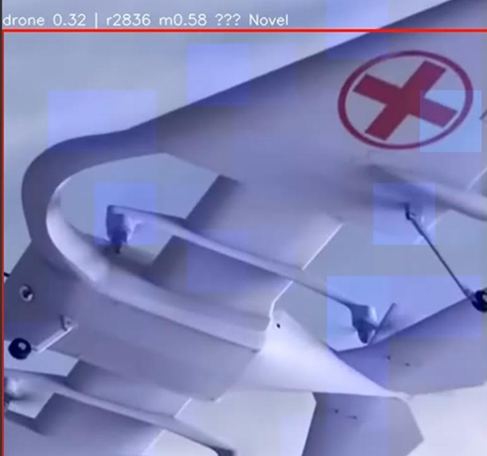
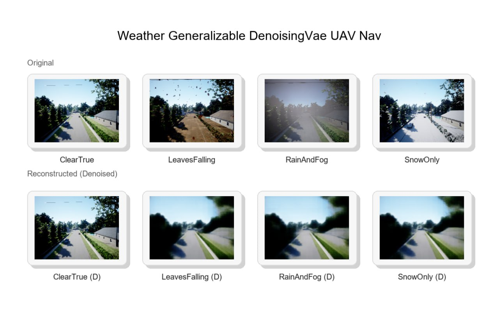

Firmware Developer & AI Researcher
Having recently completed a Master’s in Artificial Intelligence, I bring a strong foundation in AI-driven problem-solving and innovation, backed by a background in firmware development and a Bachelor's in Computer Science. I excel in code debugging, performance optimization, and have hands-on experience with Agile methodologies, version control, and software testing.
Research Assistant
Brandenburg University of Technology Cottbus-Senftenberg 10/2025 – Present
Research Assistant – Vehicle Routing Problem
Brandenburg University of Technology Cottbus-Senftenberg 05/2023 – 10/2023
Firmware Developer / AI Research (Working Student)
Perinet GmbH, Germany 12/2023 – 09/2025
Senior Project Engineer – Firmware Systems
Wipro Limited (HP Firmware Development) 07/2019 – 09/2022
MSc Artificial Intelligence
BTU Cottbus-Senftenberg, Germany
BTech in Computer Science
APJ Abdul Kalam Technological University, India
Evaluating Reinforcement Learning Algorithms for UAV Navigation in Diverse Simulated Environments. A study that explored domain randomization approach and demonstrated robustness in diverse weather with depth-based perception.
This project combines a Conditional Variational Autoencoder (CVAE) with a YOLOv8 detector to flag novel objects in drone imagery. Part of a highere vertical for CUAS_Sensory, The CVAE learns a latent space of known object classes and uses reconstruction error and Mahalanobis distance to score candidate patches. YOLO provides bounding boxes, while a sliding‑window heatmap highlights regions with unusually high reconstruction loss. Detections are labelled as “OK” or “Novel” depending on whether they exceed calibrated thresholds. The example below shows a drone marked as novel due to unusual geometry and a high reconstruction error.

As part of the CUAS_Sensory module, this project trains a machine‑learning model to recognize UAVs from their radio‑frequency (RF) emissions. Complex I/Q data are converted into power spectral density (PSD) features using Welch’s method, then downsampled into fixed‑length vectors. A Random Forest classifier identifies drone types, bands and ranges from these RF signatures.
The same PSD feature pipeline applies seamlessly to acoustic recordings: by converting I/Q signals into audio or loading standard audio files, the classifier can operate on microphone data as well as spectrum captures. This adaptability across audio and RF modalities demonstrates the multimodal design of the CUAS_Sensory stack, enabling UAV detection even when only one sensor type is available.
As a direct continuation of my Master’s thesis, my current research investigates representation learning as a preprocessing stage for reinforcement learning in autonomous UAV systems. The focus is on learning compact, task-relevant latent representations that improve policy stability and decision-making under partial observability.
The proposed architecture employs a Discrete Variational Autoencoder (DVAE) to encode high-dimensional sensory inputs into structured latent spaces, which are subsequently used as observations for a Proximal Policy Optimization (PPO) agent. This separation enables the policy to operate on semantically meaningful features, resulting in a strong balance between feature relevance understanding and action selection.

This research serves as a complementary extension to my Master’s work and as a foundation for my doctoral research pursuit, with future directions including hierarchical latent spaces, uncertainty-aware policies, multimodal fusion, and sim-to-real transfer for UAV and robotic systems.
In parallel with representation learning for reinforcement learning, I am also developing an experimental framework for UAV anti-jamming and resilient communication strategies. This research investigates how adversarial RF interference impacts autonomous aerial systems and how adaptive mechanisms can mitigate communication degradation.
The current simulation setup models variable jamming power and evaluates its influence on critical communication metrics such as Packet Error Rate (PER) and Signal-to-Interference-and-Noise Ratio (SINR). Additionally, an experimental interference source position prediction module is integrated to estimate jammer location under controlled conditions.
This research complements my broader doctoral vision of building robust, uncertainty-aware autonomous UAV systems. Future extensions include reinforcement learning-based adaptive frequency selection, causal modeling of interference dynamics, multimodal sensing for jammer localization, and sim-to-real validation in edge-deployed aerial platforms.